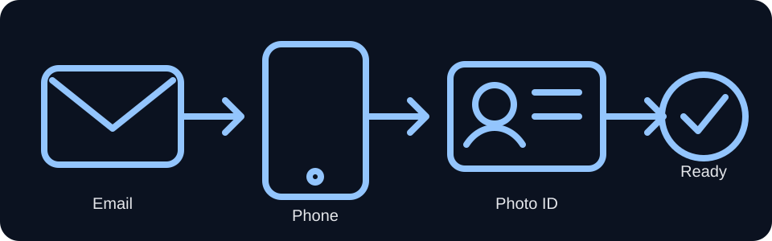
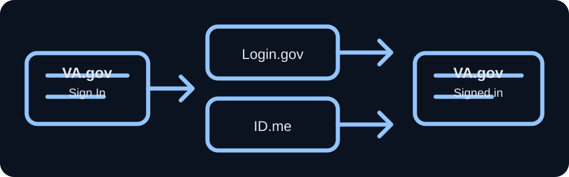
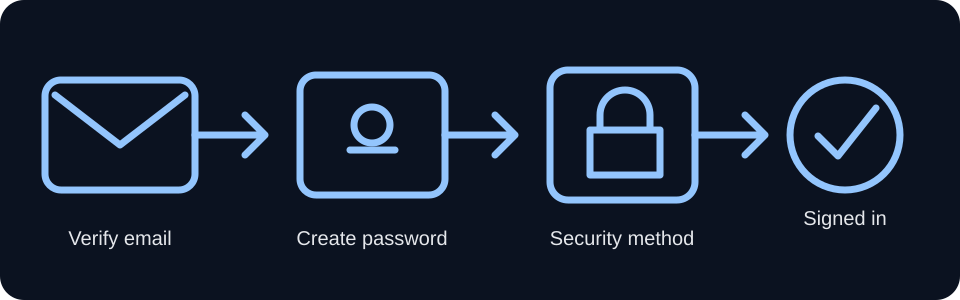
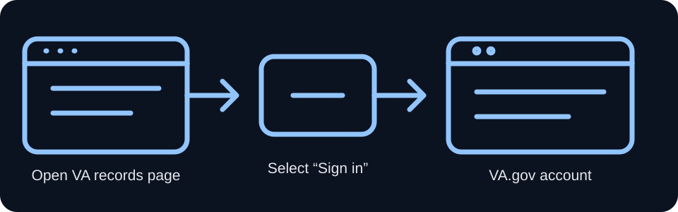
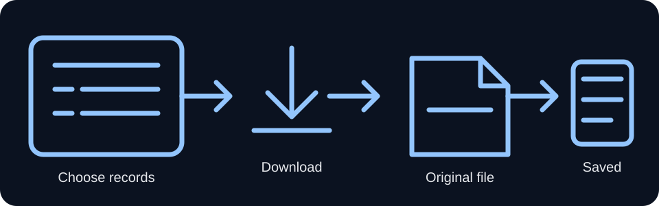
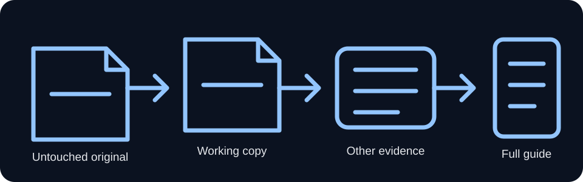

Card 1 of 6
Get ready
Goal: Make sure you have the basic items needed to create or use a secure VA.gov sign-in.

Card 2 of 6
Choose your secure sign-in
Login.gov and ID.me are secure sign-in services. VA.gov uses them to confirm who you are. They are not VA benefits programs.

If you have neither, this test workflow recommends creating a Login.gov account. ID.me remains an available VA.gov sign-in option.
Card 3 of 6
Create or verify your Login.gov account

Use the official Login.gov page. Never share your password or one-time security code with another person.
Card 4 of 6
Sign in to VA.gov

Card 5 of 6
Find and download your VA medical records
The term Blue Button means the VA tool used to view or download health information. It is not a physical blue button.

Card 6 of 6
Preserve your records and choose the next path

Workflow complete
You confirmed the account-access and medical-record download steps. This does not mean a disability claim has been prepared or filed. Continue with the full guide to gather evidence, identify claim theories, and prepare veteran-reviewed materials.